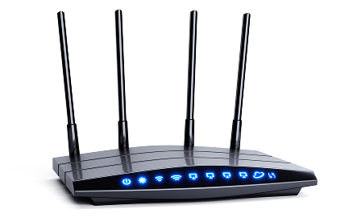
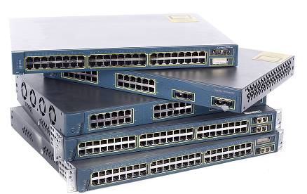

개념 학습
네트워크의 개념
네트워크는 컴퓨터나 다양한 디지털 장치들을 유선 또는 무선으로 연결하여 데이터를 송수신하는 통신망이다. 이 통신망은 라우터와 스위치를 통해 연결되며, 각각의 장치들은 고유한 네트워크 주소를 가지고 있어 서로를 구분할 수 있다.
라우터와 스위치
1. 라우터: 서로 다른 네트워크를 연결하고 데이터를 가장 효율적인 경로로 전달하는 장치
예시

학교 컴퓨터실에 있는 컴퓨터로 도서관에 있는 프린터를 사용하려고 할 때 컴퓨터와 도서관은 서로 다른 네트워크에 속해 있기 때문에 바로 연결되지 않는다. 이때 라우터가 두 네트워크를 연결하여 컴퓨터실에서 도서관의 프린터를 사용할 수 있도록 데이터를 전달한다.
2. 스위치: 같은 네트워크 내에서 여러 장치를 연결하고, 데이터를 직접 전달하는 장치
예시

학교 컴퓨터실에 있는 여러 대의 컴퓨터가 한 대의 프린터에 연결되어 있을 때, 스위치는 컴퓨터 간 데이터를 주고받으며, 프린터로 데이터를 정확하게 전송하는 역할을 한다.